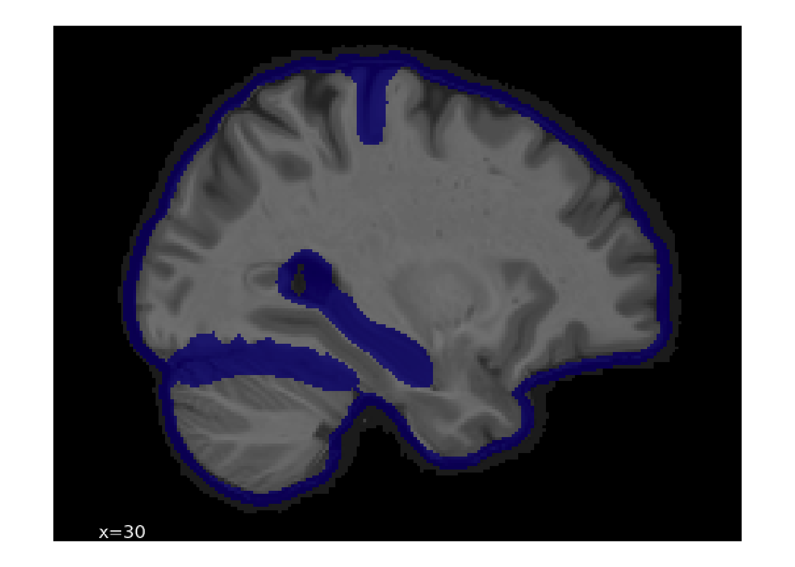

library(dplyr)
library(duckplyr)
library(ggplot2)
library(png)
library(purrr)
library(stringr)
library(tidyr)25 Manual Derivative QC
Most preprocessing pipelines fail on a subset of scans. For large-scale studies, failure rates of even a few percentage points can amount to dozens of scans. Although there are automated ways of detecting some pipeline failures (such as the metrics covered in Chapter 23), the data used to train failure detection algorithms are limited. Automated metrics often miss subtle but critical errors—such as poor spatial normalization to a template, imprecise tissue boundaries during brain extraction, or incorrect alignment between functional and structural scans. For these reasons, manual, visual review remains the gold standard.
As of Release 3.0, a subset of the neuroimaging derivatives have undergone manual QC. Reviewers manually click on boundaries or rate alignments. This kit shows how those ratings are packaged and how they can be used to exclude problematic participants from your analyses.
25.1 Starting Project
We assume that the data were downloaded from the NIMH Data Archive (NDA) as a Data Package and saved to data/nda inside the project folder (Appendix C describes what a package contains). Each NDA data structure is a table, <structure>.txt, and any files that the structure references are underneath <structure>/corral-secure/projects/A2CPS/products/consortium-data/pre-surgery. Paths in the text start from that folder, while code chunks spell out the full path from the project folder.
The Derivative QC metrics are referenced by fmriresults01, underneath mris/derivatives/qc. They consist of four tables.
$ ls mris/derivatives/qc/
coordinate.parquet image.parquet rating.parquet session.parquet25.1.1 Extract Data
Two of these tables contain quality ratings (rating.parquet and coordinate.parquet), and the others contain metadata about the ratings (e.g., identity of the rater). Of the tables with quality information rating.parquet stores “overall” rating information. These are for ratings that reviewers can provide a categorical and judgement, identifying whether a target was created “successfully”, whether target creation “failed”, or whether the reviewer is “unsure”. These kinds of ratings are used to assess coregistration and fractional anisotropy maps. Another kind of rating is stored in coordinate.parquet. These ratings refer not to the overall image but rather to specific points within the image that indicate a failure. Reviewers “click” on parts of the target that seem off (e.g., a misplaced tissue boundary), and the coordinates of those clicks are recorded.
Let’s look through the schema of each table.
25.1.1.1 session
This table contains information about the rating session (e.g., helpful for determining rater consistency).
# files referenced by fmriresults01 in the NDA package (see Locate Data)
fmriresults01 <- file.path(
"data/nda/fmriresults01",
"corral-secure/projects/A2CPS/products/consortium-data/pre-surgery"
)
read_parquet_duckdb(file.path(
fmriresults01,
"mris/derivatives/qc/session.parquet"
)) |>
head()| id | step | user | created |
|---|---|---|---|
| 1 | 0 | NA | 2025-07-28 13:25:14 |
| 2 | 3 | NA | 2025-07-28 13:25:37 |
| 3 | 2 | NA | 2025-07-28 18:47:04 |
| 4 | 1 | NA | 2025-07-29 01:09:28 |
| 5 | 2 | NA | 2025-07-29 01:09:40 |
| 6 | 2 | NA | 2025-07-29 12:37:20 |
id: ID of sessionstep: ID indicating the kind of target being rated (https://github.com/psadil/django-qcapp-ratings/blob/1080ae40304c067fec283fc04bd956834c61d99c/src/django_qcapp_ratings/models.py#L9-L14)- MASK = 0
- SPATIAL_NORMALIZATION = 1
- SURFACE_LOCALIZATION = 2
- FMAP_COREGISTRATION = 3
- DTIFIT = 4
user: ID user who was doing to rating (note: user id capturing currently exhibits some errors)created: datetime stamp of when the session started
25.1.1.2 image
This table contains information about the to-be rated targets.
read_parquet_duckdb(file.path(
fmriresults01,
"mris/derivatives/qc/image.parquet"
)) |>
select(-img) |> # just for display purposes, so this webpage is not too big
head()| id | slice | file1 | file2 | display | step | created |
|---|---|---|---|---|---|---|
| 1 | 0 | sub-10003_ses-V1_desc-brain_mask.nii.gz | sub-10003_ses-V1_T1w.nii.gz | 0 | 0 | 2025-07-26 02:38:11 |
| 2 | 1 | sub-10003_ses-V1_desc-brain_mask.nii.gz | sub-10003_ses-V1_T1w.nii.gz | 0 | 0 | 2025-07-26 02:38:15 |
| 3 | 2 | sub-10003_ses-V1_desc-brain_mask.nii.gz | sub-10003_ses-V1_T1w.nii.gz | 0 | 0 | 2025-07-26 02:38:20 |
| 4 | 3 | sub-10003_ses-V1_desc-brain_mask.nii.gz | sub-10003_ses-V1_T1w.nii.gz | 0 | 0 | 2025-07-26 02:38:25 |
| 5 | 4 | sub-10003_ses-V1_desc-brain_mask.nii.gz | sub-10003_ses-V1_T1w.nii.gz | 0 | 0 | 2025-07-26 02:38:29 |
| 6 | 5 | sub-10003_ses-V1_desc-brain_mask.nii.gz | sub-10003_ses-V1_T1w.nii.gz | 0 | 0 | 2025-07-26 02:38:34 |
id: ID of the to-be-rated imageimg: binary large object (BLOB) containing the imageslice: indicator for which part of the image was displayedfile1: the main source file from which the image was derived (e.g., the name of the mask)file2: supplementary file used to make the to-be-rated image (e.g., anatomical underlay)display: ID indicating the orientation of the image (https://github.com/psadil/django-qcapp-ratings/blob/1080ae40304c067fec283fc04bd956834c61d99c/src/django_qcapp_ratings/models.py#L23-L26)- X = 0
- Y = 1
- Z = 2
step: ID indicating the kind of target (https://github.com/psadil/django-qcapp-ratings/blob/1080ae40304c067fec283fc04bd956834c61d99c/src/django_qcapp_ratings/models.py#L9-L14)- MASK = 0
- SPATIAL_NORMALIZATION = 1
- SURFACE_LOCALIZATION = 2
- FMAP_COREGISTRATION = 3
- DTIFIT = 4
created: when the image was created (helpful for determining version of the release)
25.1.1.3 rating
This table contains the ratings given as “overall” scores. They apply to ratings for targets fmap coregistration and dtifit.
read_parquet_duckdb(file.path(
fmriresults01,
"mris/derivatives/qc/rating.parquet"
)) |>
head()| id | source_data_issue | rating | img_id | session | notes | created |
|---|---|---|---|---|---|---|
| 387 | FALSE | 0 | 90142 | 54 | NA | 2025-08-14 15:23:35 |
| 391 | FALSE | 0 | 106095 | 55 | NA | 2025-08-15 15:34:33 |
| 395 | FALSE | 0 | 63618 | 57 | NA | 2025-08-15 17:56:53 |
| 399 | FALSE | 0 | 79030 | 64 | NA | 2025-10-31 15:48:42 |
| 403 | FALSE | 0 | 86580 | 64 | NA | 2025-10-31 15:48:53 |
| 407 | FALSE | 0 | 103443 | 64 | NA | 2025-10-31 15:49:04 |
id: ID of each ratingsource_data_issue: boolean indicating whether the reviewer noticed an issue with the raw data qualityrating: the rating provided (https://github.com/psadil/django-qcapp-ratings/blob/1080ae40304c067fec283fc04bd956834c61d99c/src/django_qcapp_ratings/models.py#L17-L20)- PASS = 0
- UNSURE = 1
- FAIL = 2
- img_id: ID of the image that was rated (see image.parquet)
- session: ID of the rating session (see session.parquet)
- notes: freeform text used to provide details about the rating
- created: datetime stamp of when the rating was produced
25.1.1.4 coordinate
This table contains the coordinates that were clicked during reviews, locations indicating some source data issue. These were used to rate the mask, spatial normalization, and surface localization.
read_parquet_duckdb(
file.path(fmriresults01, "mris/derivatives/qc/coordinate.parquet")
) |>
head()| id | source_data_issue | x | y | img_id | session | notes | created |
|---|---|---|---|---|---|---|---|
| 1 | FALSE | NA | NA | 8561 | 1 | NA | 2025-07-28 13:25:22 |
| 2 | FALSE | NA | NA | 5856 | 1 | NA | 2025-07-28 13:25:26 |
| 3 | FALSE | NA | NA | 11379 | 1 | NA | 2025-07-28 13:25:31 |
| 4 | FALSE | NA | NA | 4790 | 3 | NA | 2025-07-28 18:47:11 |
| 5 | FALSE | NA | NA | 11719 | 3 | NA | 2025-07-28 18:47:21 |
| 6 | FALSE | NA | NA | 23626 | 3 | NA | 2025-07-28 18:47:25 |
id: ID of each clicked coordinatesource_data_issue: boolean indicating whether the reviewer noticed an issue with the raw data qualityx: horizontal coordinate of the target issuey: vertical coordinate of the target issueimg_id: ID of the image that was rated (see image.parquet)session: ID of the rating session (see session.parquet)notes: freeform text used to provide details about the ratingcreated: datetime stamp of when the rating was produced
Note: rows where the x and y coordinates are NA indicate that the reviewer did not observe any issues with the target (that is, these images were reviewed, but no problems were found).
25.1.2 Example Image Plotting
Let’s see how we can display the rated images. As an example, we’ll look one of the spatial normalization images.
# grab images associated with spatial normalization
spatial_norm_images <- read_parquet_duckdb(
file.path(fmriresults01, "mris/derivatives/qc/image.parquet")
) |>
filter(step == 1, display == 0) |>
select(id, img)
# grab image with lots of clicks
img_with_many_clicks <- read_parquet_duckdb(
file.path(fmriresults01, "mris/derivatives/qc/coordinate.parquet")
) |>
filter(!is.na(x)) |>
semi_join(spatial_norm_images, by = join_by(img_id == id)) |>
summarise(n_clicks = n(), .by = c(img_id)) |>
arrange(img_id) |> # for reproducibility
slice_head(n = 1, by = n_clicks)
img_with_many_clicks| img_id | n_clicks |
|---|---|
| 576 | 8 |
We’re going to need a helper function to convert the img BLOBs into a tibble for display with ggplot.
to_tbl <- function(.i) {
# apply() already yields hex colors, so they can be handed straight to
# scale_fill_identity() below; there is no need to split them back into
# separate channels.
apply(.i, 2, rgb) |>
as_tibble() |>
mutate(y = row_number()) |>
pivot_longer(-y, names_to = "x", values_to = "color") |>
mutate(
x = str_extract(x, "[[:digit:]]+") |> as.integer(),
y = max(y) - y + 1
)
}Now, return to the image.parquet file, do a filter join to get just a single row, select it, apply the helper, and plot.
# now show the associated blob
read_parquet_duckdb(file.path(
fmriresults01,
"mris/derivatives/qc/image.parquet"
)) |>
semi_join(img_with_many_clicks, by = join_by(id == img_id)) |>
pluck("img", 1) |>
readPNG() |>
to_tbl() |>
ggplot(aes(x = x, y = y)) +
geom_raster(aes(fill = color)) +
scale_fill_identity() +
coord_fixed() +
theme_void()
By referring back to img.parquet file, we can see metadata about the source file.
read_parquet_duckdb(file.path(
fmriresults01,
"mris/derivatives/qc/image.parquet"
)) |>
semi_join(img_with_many_clicks, by = join_by(id == img_id)) |>
select(-img)| id | slice | file1 | file2 | display | step | created |
|---|---|---|---|---|---|---|
| 576 | 2 | sub-10040_ses-V1_space-MNI152NLin2009cAsym_desc-preproc_T1w.nii.gz | NA | 0 | 1 | 2025-07-28 01:39:59 |
25.1.3 Use of Ratings to Exclude Images
These ratings can be used to exclude images from analyses. Here, we show how to exclude all functional images that were generated from fieldmaps that were out of register.
# grab all fieldmap images
fmap_coregistration_images <- read_parquet_duckdb(
file.path(fmriresults01, "mris/derivatives/qc/image.parquet")
) |>
filter(step == 3) |>
select(id, file1, file2, display)
# search for all coregistrations that were marked as having failed
definite_coregistration_failures <- read_parquet_duckdb(
file.path(fmriresults01, "mris/derivatives/qc/rating.parquet")
) |>
inner_join(fmap_coregistration_images, by = join_by(img_id == id)) |>
filter(rating == 2) |>
select(file1, file2, display) |>
# pluck out useful metadata from the image
mutate(
sub = str_extract(file1, "(?<=sub-)[[:digit:]]{5}") |>
as.integer(),
task = str_extract(file1, "cuff|rest"),
run = str_extract(file1, "(?<=run-0)[1|2]")
) |>
distinct(sub, task, run) |>
arrange(sub, task, run) |> # for reproducibility
collect()How many failed coregistrations were there?
nrow(definite_coregistration_failures)[1] 126This is the table that you’d use to exclude files from analyses.
definite_coregistration_failures |> head()| sub | task | run |
|---|---|---|
| 10041 | rest | 1 |
| 10042 | cuff | 2 |
| 10042 | rest | 1 |
| 10050 | cuff | 1 |
| 10050 | rest | 1 |
| 10055 | cuff | 2 |
25.2 Considerations While Working on the Project
25.2.1 Data Generation
Derivative QC is a work in progress, and so we expect substantial improvements in subsequent releases. As of this release, only fieldmaps coregistrations have been exhaustively checked. In future releases, we expect more targets to be reviewed.
Quality control was done with the A2CPS Derivative Image Review Tool (DIRT), which is under active development here: https://github.com/psadil/django-dirt-ratings/tree/main/src/django_dirt_ratings.
25.2.2 Citations
In publications or presentations including data from A2CPS, please include the following statement as attribution:
Data were provided (in part) by the A2CPS Consortium funded by the National Institutes of Health (NIH) Common Fund, which is managed by the Office of the Director (OD)/Office of Strategic Coordination (OSC). Consortium components and their associated funding sources include Clinical Coordinating Center (U24NS112873), Data Integration and Resource Center (U54DA049110), Omics Data Generation Centers (U54DA049116, U54DA049115, U54DA049113), Multi-site Clinical Center 1 (MCC1) (UM1NS112874), and Multi-site Clinical Center 2 (MCC2) (UM1NS118922).
Note
Berardi, G., Frey-Law, L., Sluka, K. A., Bayman, E. O., Coffey, C. S., Ecklund, D., Vance, C. G. T., Dailey, D. L., Burns, J., Buvanendran, A., McCarthy, R. J., Jacobs, J., Zhou, X. J., Wixson, R., Balach, T., Brummett, C. M., Clauw, D., Colquhoun, D., Harte, S. E., … Wandner, L. D. (2022). Multi-site observational study to assess biomarkers for susceptibility or resilience to chronic pain: The acute to chronic pain signatures (A2CPS) study protocol. Frontiers in Medicine, 9. https://doi.org/10.3389/fmed.2022.849214
Sluka, K. A., Wager, T. D., Sutherland, S. P., Labosky, P. A., Balach, T., Bayman, E. O., Berardi, G., Brummett, C. M., Burns, J., Buvanendran, A., et al. (2023). Predicting chronic postsurgical pain: Current evidence and a novel program to develop predictive biomarker signatures. Pain, 164(9), 1912–1926. https://doi.org/10.1097/j.pain.0000000000002938
Sadil, P., Arfanakis, K., Bhuiyan, E. H., Caffo, B., Calhoun, V. D., Clauw, D. J., DeLano, M. C., Ford, J. C., Gattu, R., Guo, X., Harris, R. E., Ichesco, E., Johnson, M. A., Jung, H., Kahn, A. B., Kaplan, C. M., Leloudas, N., Lindquist, M. A., Luo, Q., … Chronic Pain Signatures Consortium, T. A. to. (2024). Image processing in the acute to chronic pain signatures (A2CPS) project. bioRxiv. https://doi.org/10.1101/2024.12.19.627509
When using neuroimaging derivatives, please also cite Sadil et al. (2024).